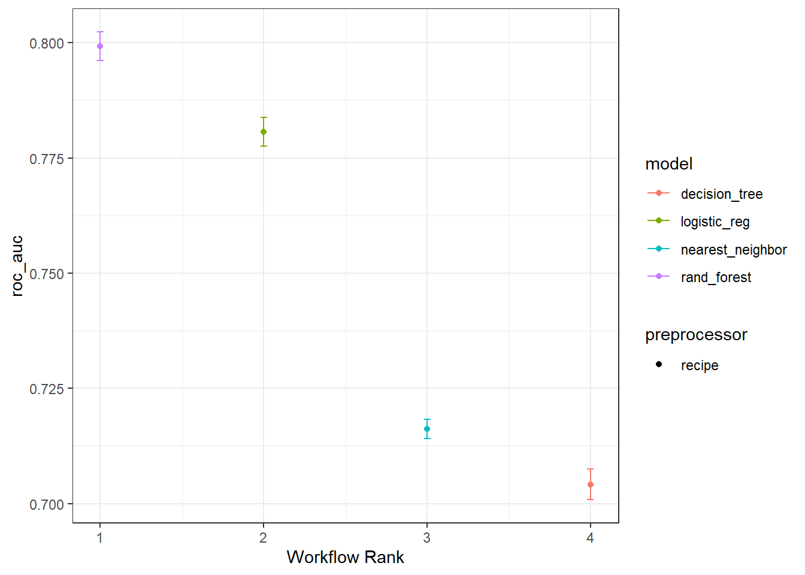
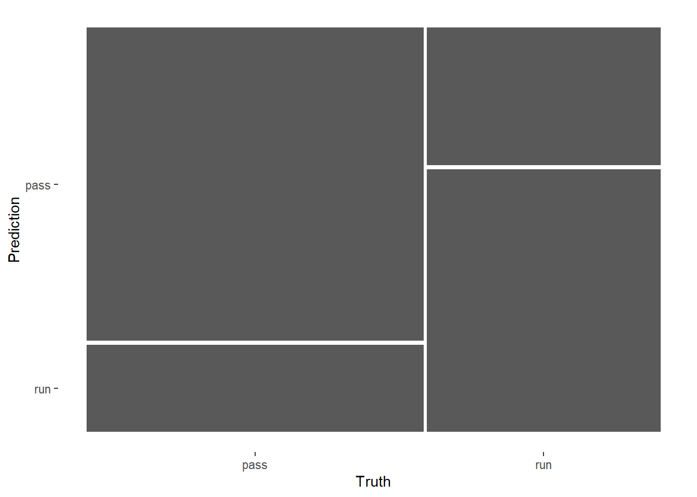
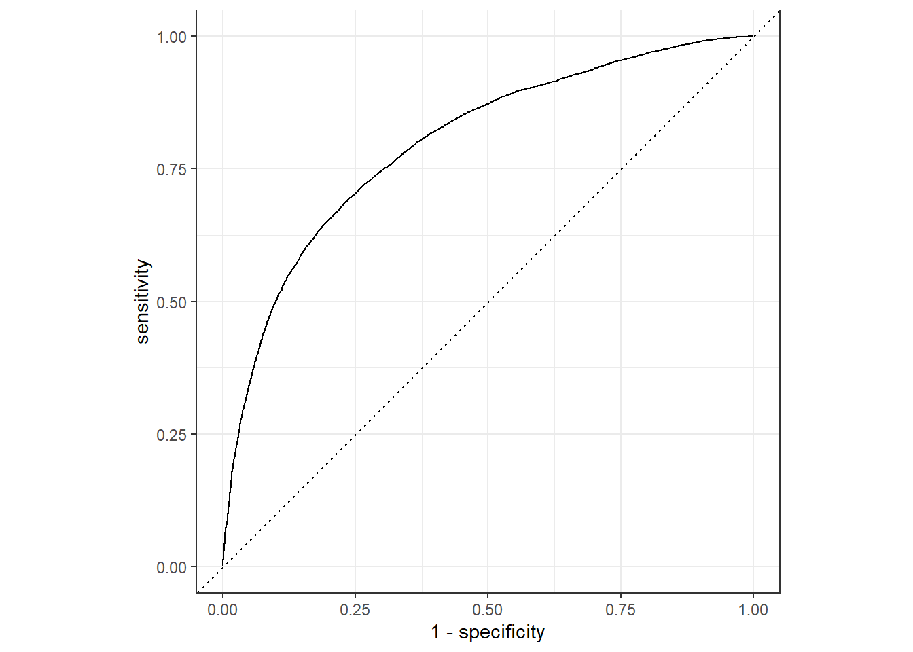

rm(list = ls())
library(tidyverse)
library(tidymodels)
library(kknn)
tidymodels_prefer()
# 加载数据
all_plays <- read_rds("./datasets/all_plays.rds")
glimpse(all_plays)
## Rows: 91,976
## Columns: 26
## $ game_id <dbl> 2017090700, 2017090700, 2017090700, 2017090…
## $ posteam <chr> "NE", "NE", "NE", "NE", "NE", "NE", "NE", "…
## $ play_type <fct> pass, pass, run, run, pass, run, pass, pass…
## $ yards_gained <dbl> 0, 8, 8, 3, 19, 5, 16, 0, 2, 7, 0, 3, 10, 0…
## $ ydstogo <dbl> 10, 10, 2, 10, 7, 10, 5, 2, 2, 10, 10, 10, …
## $ down <ord> 1, 2, 3, 1, 2, 1, 2, 1, 2, 1, 1, 2, 3, 1, 2…
## $ game_seconds_remaining <dbl> 3595, 3589, 3554, 3532, 3506, 3482, 3455, 3…
## $ yardline_100 <dbl> 73, 73, 65, 57, 54, 35, 30, 2, 2, 75, 32, 3…
## $ qtr <ord> 1, 1, 1, 1, 1, 1, 1, 1, 1, 1, 1, 1, 1, 1, 1…
## $ posteam_score <dbl> 0, 0, 0, 0, 0, 0, 0, 0, 0, 0, 7, 7, 7, 7, 7…
## $ defteam <chr> "KC", "KC", "KC", "KC", "KC", "KC", "KC", "…
## $ defteam_score <dbl> 0, 0, 0, 0, 0, 0, 0, 0, 0, 7, 0, 0, 0, 0, 0…
## $ score_differential <dbl> 0, 0, 0, 0, 0, 0, 0, 0, 0, -7, 7, 7, 7, 7, …
## $ shotgun <fct> 0, 0, 1, 1, 1, 0, 1, 0, 0, 1, 1, 1, 1, 1, 0…
## $ no_huddle <fct> 0, 0, 0, 1, 1, 1, 1, 0, 0, 0, 0, 0, 0, 0, 0…
## $ posteam_timeouts_remaining <fct> 3, 3, 3, 3, 3, 3, 3, 3, 3, 3, 3, 3, 3, 3, 3…
## $ defteam_timeouts_remaining <fct> 3, 3, 3, 3, 3, 3, 3, 3, 3, 3, 3, 3, 3, 3, 3…
## $ wp <dbl> 0.5060180, 0.4840546, 0.5100098, 0.5529816,…
## $ goal_to_go <fct> 0, 0, 0, 0, 0, 0, 0, 1, 1, 0, 0, 0, 0, 0, 0…
## $ half_seconds_remaining <dbl> 1795, 1789, 1754, 1732, 1706, 1682, 1655, 1…
## $ total_runs <dbl> 0, 0, 0, 1, 2, 2, 3, 3, 3, 0, 4, 4, 4, 5, 5…
## $ total_pass <dbl> 0, 1, 2, 2, 2, 3, 3, 4, 5, 0, 5, 6, 7, 7, 8…
## $ previous_play <fct> First play of Drive, pass, pass, run, run, …
## $ in_red_zone <fct> 0, 0, 0, 0, 0, 0, 0, 1, 1, 0, 0, 0, 0, 1, 1…
## $ in_fg_range <fct> 0, 0, 0, 0, 0, 1, 1, 1, 1, 0, 1, 1, 1, 1, 1…
## $ two_min_drill <fct> 0, 0, 0, 0, 0, 0, 0, 0, 0, 0, 0, 0, 0, 0, 0…39 tidymodels实现多模型比较
该方法基于
tidymodels实现，tidymodels是目前R语言里做机器学习和预测模型的当红辣子鸡之一（另一个是mlr3），公众号后台回复tidymodels即可获取tidymodels合集链接，带你全面了解tidymodels。另外，我翻译的《tidy modeling with R》中文版-《R语言整洁建模》，也已开卖，感兴趣的朋友不要错过。
在实际操作临床预测模型的建立时，有很多时候我们是要同时建立多个模型的。如果每个模型都写一遍代码，就会非常的费事儿，比如你要建立4个模型，那么就需要把相同的流程写4遍代码，那要是选择10个模型，就得来10遍！无聊，非常的无聊。
所以这里给大家介绍简便方法，不用重复写代码，一次搞定多个模型！使用tidymodels中的workflow即可。
这个”工作流”的概念请参考tidymodels工作流：workflow，这个工具十分强大，下面用一个示例进行展示。
39.1 加载数据和R包
今天用的这份数据，结果变量是一个二分类的。一共有91976行，26列，其中play_type是结果变量，因子型，其余列都是预测变量。
39.2 数据划分
把75%的数据用于训练集，剩下的做测试集。
set.seed(20220520)
# 数据划分，根据play_type分层
split_pbp <- initial_split(all_plays, 0.75, strata = play_type)
train_data <- training(split_pbp) # 训练集
test_data <- testing(split_pbp) # 测试集
dim(train_data)
## [1] 68981 26
dim(test_data)
## [1] 22995 2639.3 数据预处理
我们对这个数据进行一些简单的预处理：
- 去掉一些没用的变量
- 把一些变量从字符型变成因子型
- 去掉高度相关的变量
- 数值型变量进行中心化
- 去掉零方差变量
pbp_rec <- recipe(play_type ~ ., data = train_data) %>%
step_rm(half_seconds_remaining,yards_gained, game_id) %>%
step_string2factor(posteam, defteam) %>%
step_corr(all_numeric(), threshold = 0.7) %>%
step_center(all_numeric()) %>%
step_zv(all_predictors()) 39.4 选择模型
直接选择4个模型，你想选几个都是可以的。
# 逻辑回归模型
lm_mod <- logistic_reg(mode = "classification",engine = "glm")
# K最近邻模型
knn_mod <- nearest_neighbor(mode = "classification", engine = "kknn")
# 随机森林模型
rf_mod <- rand_forest(mode = "classification", engine = "ranger")
# 决策树模型
tree_mod <- decision_tree(mode = "classification",engine = "rpart")39.5 选择重抽样方法
我们选择内部重抽样方法为10折交叉验证：
set.seed(20220520)
folds <- vfold_cv(train_data, v = 10)
folds
## # 10-fold cross-validation
## # A tibble: 10 × 2
## splits id
## <list> <chr>
## 1 <split [62082/6899]> Fold01
## 2 <split [62083/6898]> Fold02
## 3 <split [62083/6898]> Fold03
## 4 <split [62083/6898]> Fold04
## 5 <split [62083/6898]> Fold05
## 6 <split [62083/6898]> Fold06
## 7 <split [62083/6898]> Fold07
## 8 <split [62083/6898]> Fold08
## 9 <split [62083/6898]> Fold09
## 10 <split [62083/6898]> Fold1039.6 构建workflow
这一步就是不用重复写代码的关键，把所有模型和数据预处理步骤自动连接起来。
library(workflowsets)
four_mods <- workflow_set(list(rec = pbp_rec), # 预处理
list(lm = lm_mod, # 模型
knn = knn_mod,
rf = rf_mod,
tree = tree_mod
),
cross = T
)
four_mods
## # A workflow set/tibble: 4 × 4
## wflow_id info option result
## <chr> <list> <list> <list>
## 1 rec_lm <tibble [1 × 4]> <opts[0]> <list [0]>
## 2 rec_knn <tibble [1 × 4]> <opts[0]> <list [0]>
## 3 rec_rf <tibble [1 × 4]> <opts[0]> <list [0]>
## 4 rec_tree <tibble [1 × 4]> <opts[0]> <list [0]>而且你会发现我们虽然设置了预处理步骤，但是并没有进行预处理，展示因为当我们建立工作流之后，它会自动进行这一步，不需要我们提前处理好。这个概念一定要理解。
39.7 同时拟合多个模型
首先是一些运行过程中的参数设置：
# 保存中间的结果
keep_pred <- control_resamples(save_pred = T, verbose = T)然后就是同时运行4个模型（目前一直是在训练集中），我们给它加速一下：
library(doParallel)
cl <- makePSOCKcluster(12) # 加速，用12个线程
registerDoParallel(cl)
four_fits <- four_mods %>%
workflow_map("fit_resamples",
seed = 0520,
verbose = T,
resamples = folds,
control = keep_pred
)
i 1 of 4 resampling: rec_lm
✔ 1 of 4 resampling: rec_lm (26.6s)
i 2 of 4 resampling: rec_knn
✔ 2 of 4 resampling: rec_knn (3m 44.1s)
i 3 of 4 resampling: rec_rf
✔ 3 of 4 resampling: rec_rf (1m 10.9s)
i 4 of 4 resampling: rec_tree
✔ 4 of 4 resampling: rec_tree (4.5s)
#saveRDS(four_fits,file="datasets/four_fits.rds")
stopCluster(cl)
four_fits需要很长时间！大家笔记本如果内存不够可能会失败哦，而且运行完之后R会变得非常卡！
39.8 查看结果
查看模型在训练集中的表现（也就是看各种指标）：
collect_metrics(four_fits)
## # A tibble: 8 × 9
## wflow_id .config preproc model .metric .estimator mean n std_err
## <chr> <chr> <chr> <chr> <chr> <chr> <dbl> <int> <dbl>
## 1 rec_lm Preprocessor1_M… recipe logi… accura… binary 0.724 10 1.91e-3
## 2 rec_lm Preprocessor1_M… recipe logi… roc_auc binary 0.781 10 1.88e-3
## 3 rec_knn Preprocessor1_M… recipe near… accura… binary 0.671 10 7.31e-4
## 4 rec_knn Preprocessor1_M… recipe near… roc_auc binary 0.716 10 1.28e-3
## 5 rec_rf Preprocessor1_M… recipe rand… accura… binary 0.732 10 1.48e-3
## 6 rec_rf Preprocessor1_M… recipe rand… roc_auc binary 0.799 10 1.90e-3
## 7 rec_tree Preprocessor1_M… recipe deci… accura… binary 0.720 10 1.97e-3
## 8 rec_tree Preprocessor1_M… recipe deci… roc_auc binary 0.704 10 2.01e-3结果中给出了每个模型的AUC值和准确率，哪个大就说明哪个好。
查看每一个预测结果，这个就不运行了，毕竟好几万行，太多了。。。
collect_predictions(four_fits)39.9 可视化结果
直接可视化4个模型的结果，感觉比ROC曲线更好看，还给出了可信区间。
这个图可以自己用ggplot2语法修改。
four_fits %>% autoplot(metric = "roc_auc")+theme_bw()
从这个图中来看，随机森林模型是最好的，决策树最差。
39.10 显著性检验
只看大小的话肯定是随机森林最好，但是这种差异有没有统计学意义呢？这就需要专门的统计检验方法了，比如t检验。
在此之前，我们先看看4个模型的AUC之间的相关性如何，也就是计算相关系数：
auc_indiv_estimates <-
collect_metrics(four_fits, summarize = FALSE) %>%
filter(.metric == "roc_auc")
auc_wider <-
auc_indiv_estimates %>%
select(wflow_id, .estimate, id) %>%
pivot_wider(id_cols = "id", names_from = "wflow_id", values_from = ".estimate")
corrr::correlate(auc_wider %>% select(-id), quiet = TRUE)
## # A tibble: 4 × 5
## term rec_lm rec_knn rec_rf rec_tree
## <chr> <dbl> <dbl> <dbl> <dbl>
## 1 rec_lm NA 0.505 0.933 0.940
## 2 rec_knn 0.505 NA 0.577 0.298
## 3 rec_rf 0.933 0.577 NA 0.860
## 4 rec_tree 0.940 0.298 0.860 NA上面是一个相关系数矩阵，可以看出线性模型和随机森林以及决策树的AUC相关性很高，随机森林和决策树的AUC相关性也很高，其他模型之间的相关性很低。
下面给大家使用t检验计算一下线性模型和随机森林模型的p值，看看是否有统计学显著性。
# 配对t检验
auc_wider %>%
with(t.test(rec_lm, rec_rf, paired = TRUE) ) %>%
tidy() %>%
select(estimate, p.value, starts_with("conf"))
## # A tibble: 1 × 4
## estimate p.value conf.low conf.high
## <dbl> <dbl> <dbl> <dbl>
## 1 -0.0186 6.74e-10 -0.0202 -0.0170结果表明p值是小于0.0001的，具有统计学显著性，说明随机森林模型确实比线性回归好。
39.11 选择最好的模型用于测试集
选择表现最好的模型（随机森林）应用于测试集：
rand_res <- last_fit(rf_mod,pbp_rec,split_pbp)
#saveRDS(rand_res,file = "./datasets/rand_res.rds")查看模型在测试集的模型表现：
collect_metrics(rand_res) # test 中的模型表现
## # A tibble: 2 × 4
## .metric .estimator .estimate .config
## <chr> <chr> <dbl> <chr>
## 1 accuracy binary 0.731 Preprocessor1_Model1
## 2 roc_auc binary 0.799 Preprocessor1_Model1使用其他指标查看模型表现：
metricsets <- metric_set(accuracy, mcc, f_meas, j_index)
collect_predictions(rand_res) %>%
metricsets(truth = play_type, estimate = .pred_class)
## # A tibble: 4 × 3
## .metric .estimator .estimate
## <chr> <chr> <dbl>
## 1 accuracy binary 0.731
## 2 mcc binary 0.440
## 3 f_meas binary 0.774
## 4 j_index binary 0.438可视化结果，喜闻乐见的混淆矩阵：
collect_predictions(rand_res) %>%
conf_mat(play_type,.pred_class) %>%
autoplot()
喜闻乐见的ROC曲线：
collect_predictions(rand_res) %>%
roc_curve(play_type,.pred_pass) %>%
autoplot()
还有非常多曲线和评价指标可选，大家可以看我之前的介绍推文。
这里介绍的tidymodels的内容比较简单，大家如果想认真学习这个R包的话肯定是要下一番功夫的，我在公众号写了非常多相关的推文，可以在公众号后台回复tidymodels获取合集。